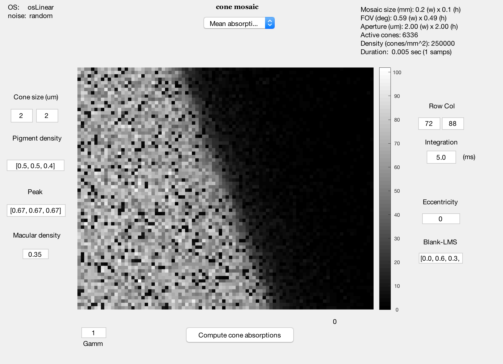
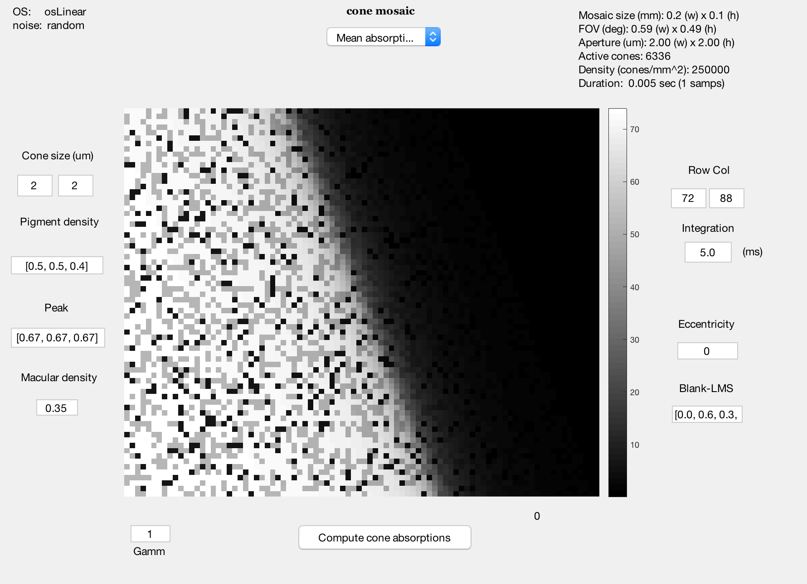
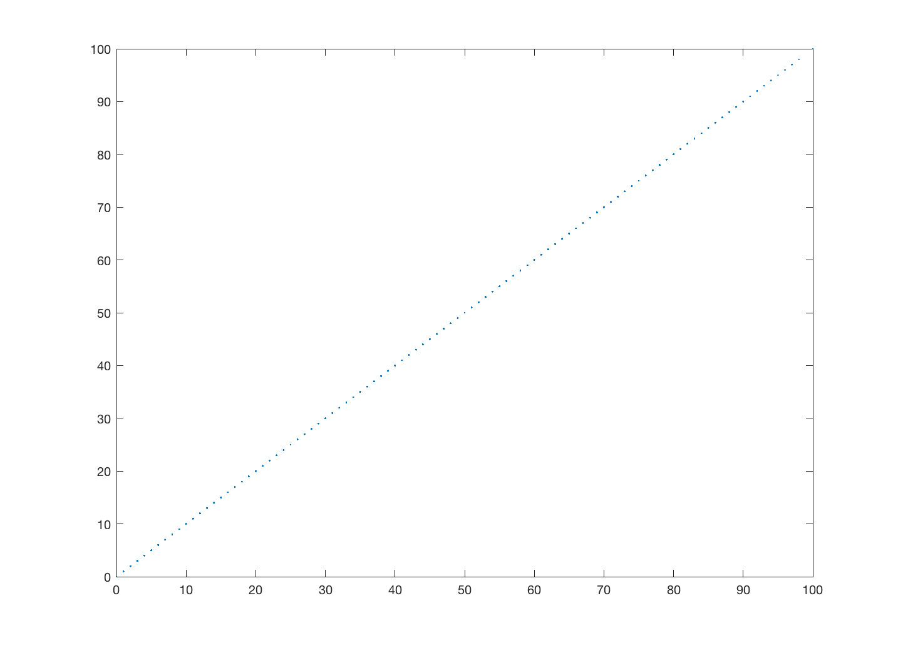
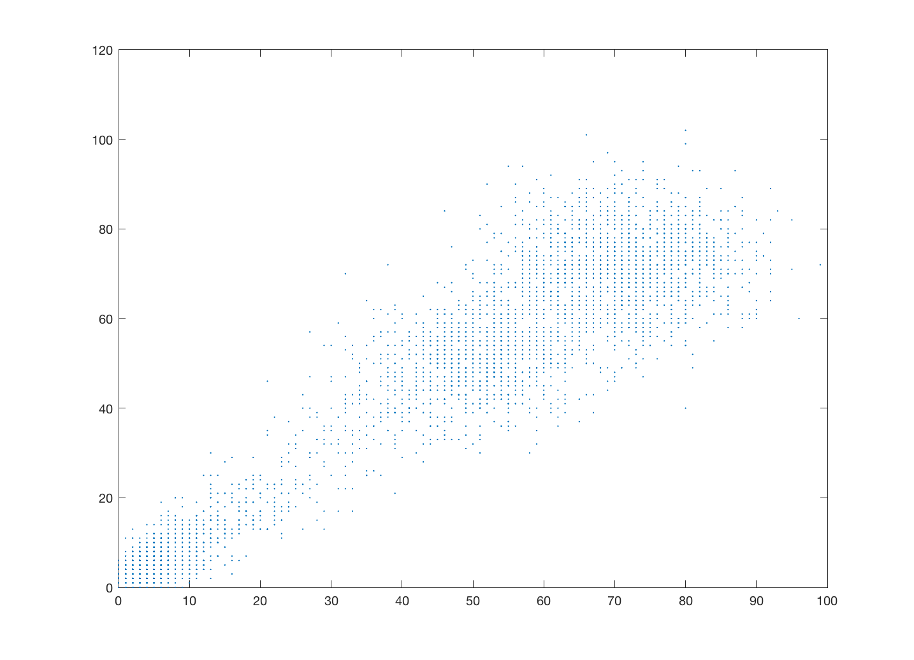

t_coneMosaicAbsorptionNoise
Testing noise models in coneMosaic.compute.
We set coneMosaic.noiseFlag to 'random', 'frozen', and 'none'. I do not try - but should - controlling the 'seed' for frozen. More work needed on that.
BW, ISETBIO Team, 2016
Contents
ieInit
scene = sceneCreate('slanted bar');
oi = oiCreate;
oi = oiCompute(oi,scene);
ieAddObject(oi);
Random noise is the default
cMosaic = coneMosaic; cMosaic.compute(oi); cMosaic.window;
No noise produces an image in which the L cones are all about the same
And the M and the S.
cMosaic.noiseFlag = 'none'; cMosaic.compute(oi); cMosaic.window; % Try plotting LMS
Frozen noise
cMosaic.noiseFlag = 'frozen'; cMosaic.compute(oi); a1 = cMosaic.absorptions; cMosaic.compute(oi); a2 = cMosaic.absorptions; vcNewGraphWin; plot(a1(:),a2(:),'.');
Random noise differs each time and variance increases with level
cMosaic.noiseFlag = 'random'; cMosaic.compute(oi); a1 = cMosaic.absorptions; cMosaic.compute(oi); a2 = cMosaic.absorptions; vcNewGraphWin; plot(a1(:),a2(:),'.');
Note that no current is computed for a single frame
% Try it, if you like. % cMosaic.computeCurrent;